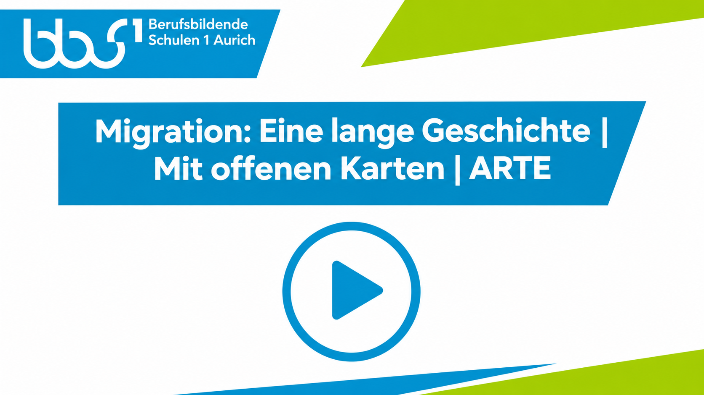

M3 · Migration, Leitkultur und hybride Identitäten
Materialzugriff
Migration prägt Deutschland seit Jahrzehnten. Dieses Material zeigt, wie sich dadurch Vorstellungen von Zugehörigkeit verändern und warum Identität heute oft mehrschichtig ist.
MOIN, GESCHICHTE! · OSTFRIESLAND
Vielfalt ist auch in Ostfriesland längst Teil des Alltags.
LEITFRAGE
Wie verändert Migration nationale Identität – und wie viel Gemeinsamkeit braucht eine vielfältige Gesellschaft?
Deutschland als Einwanderungsland
Deutschland hat lange gebraucht, um sich selbst als Einwanderungsland zu verstehen. Schon in den 1950er- und 60er-Jahren kamen hunderttausende sogenannte „Gastarbeiter“ aus Italien, Griechenland und der Türkei. Viele blieben dauerhaft; ihre Kinder, Enkel und Urenkel sind Teil der deutschen Gesellschaft.
2015 kamen besonders viele Schutzsuchende nach Deutschland. Die Aufnahme von Geflüchteten und Fragen von Migration und Integration wurden erneut zu zentralen Themen in Politik, Medien und Alltag. Für eure Generation ist das Einwanderungsland Deutschland gelebte Realität.
Die Leitkultur-Debatte
Was hält eine vielfältige Gesellschaft zusammen? Die Leitkultur-Debatte kreist um genau diese Frage. Der Politikwissenschaftler Bassam Tibi verwendete den Begriff bereits 1996 für einen europäischen Wertekonsens. Um das Jahr 2000 wurde die Vorstellung einer „deutschen Leitkultur“, unter anderem durch Friedrich Merz, zu einer breiten politischen Kontroverse. Leitkultur meint gemeinsame Werte, Traditionen und Verhaltensweisen, die Orientierung geben sollen.
Befürworter betonen Sprache, Gesetze und gemeinsame Normen. Gegner warnen davor, dass Leitkultur nach kultureller Überlegenheit klingen und Migration eher als Problem denn als Chance behandeln kann.
Hybride Identitäten – das Leben zwischen Kulturen
Viele Menschen leben mehrere kulturelle Zugehörigkeiten gleichzeitig. Zuhause wird vielleicht eine andere Sprache gesprochen oder es gibt andere Feste und Essgewohnheiten. Schule, Beruf und Freundeskreis prägen wiederum andere Seiten der eigenen Identität.
Hybride Identität bedeutet nicht, zwischen Kulturen zerrissen zu sein. Sie kann heißen, verschiedene kulturelle Einflüsse miteinander zu verbinden und daraus etwas Eigenes zu entwickeln. Ein Schüler kann sich gleichzeitig deutsch und türkisch fühlen, eine Schülerin syrisch und europäisch.
Konflikte und Chancen
Unterschiedliche Wertevorstellungen können Reibungen erzeugen – etwa bei Religion, Gleichberechtigung oder Lebensstil. Debatten über Kopftuch, Moscheebau oder Integration zeigen, dass es dabei oft auch um Angst, Stolz und Zugehörigkeit geht.
Gleichzeitig eröffnet Migration neue Perspektiven und kulturelle Einflüsse. Gerade eure Generation erlebt täglich, dass Menschen mit unterschiedlichen Hintergründen gemeinsam lernen, arbeiten, lachen und Sport machen.
MIGRATION UND NATIONALE IDENTITÄT
Die spannende Frage bleibt: Wird „Deutschsein“ durch Migration unklarer – oder entwickelt es sich weiter? Viele WissenschaftlerInnen sprechen von einem offenen Konstrukt. Zugehörigkeit wird dabei nicht nur über Abstammung, sondern auch über gemeinsame Werte wie Demokratie, Rechtsstaat und Gleichberechtigung verstanden.
Das Staatsangehörigkeitsrecht wurde im Jahr 2000 reformiert. Damit wurde stärker sichtbar: Nation ist nicht nur Herkunft, sondern auch rechtliche und gesellschaftliche Zugehörigkeit.
Leitbilder in anderen Ländern
Einwanderungsgesellschaften entwickeln unterschiedliche Modelle. In den USA spricht man vom „Melting Pot“: Kulturen verschmelzen zu etwas Neuem. In Kanada steht das Bild des „Mosaiks“ dafür, dass kulturelle Eigenheiten erhalten bleiben und gemeinsam ein Ganzes bilden.
Auch Deutschland diskutiert weiter darüber, wie viel Verschmelzung, Vielfalt und gemeinsame Orientierung sinnvoll sind.
ZUSAMMENFASSUNG
Deutschland ist längst ein Einwanderungsland. Migration verändert, was wir unter Identität und Nation verstehen. Die Leitkultur-Debatte zeigt den Wunsch nach Orientierung, birgt aber auch das Risiko von Ausgrenzung. Hybride Identitäten sind für viele Jugendliche Realität und zeigen, dass mehrere Zugehörigkeiten gleichzeitig gelebt werden können.
AUSBLICK
M3 soll euch Mut machen, Identität nicht als festes Etikett zu sehen, sondern als dynamisches Geflecht. Für euren Podcast könnt ihr fragen: Welche Geschichten kennt ihr aus eurem Umfeld? Welche Erfahrungen wollt ihr teilen? Welche Zukunftsvision habt ihr für ein Deutschland der Vielfalt?
Quelle zur Leitkultur-Debatte
Bassam Tibi: Leitkultur als Wertekonsens, APuZ 1–2/2001. Tibi erläutert hier sein bereits 1996 vorgestelltes Konzept und die spätere politische Debatte.
Fachbegriffe im Überblick
- Migration
- Wechsel des Lebensmittelpunkts innerhalb eines Landes oder über Staatsgrenzen hinweg; Gründe können etwa Arbeit, Familie oder Flucht sein.
- Leitkultur
- Umstrittenes Konzept gemeinsamer Werte, Traditionen und Verhaltensweisen, die einer Gesellschaft als Orientierung dienen sollen.
- Hybride Identität
- Verschiedene kulturelle Einflüsse werden miteinander verbunden und bilden eine eigene, veränderbare Form kultureller Zugehörigkeit.
Ergänzendes Video
Migration: Eine lange Geschichte | Mit offenen Karten | ARTE
